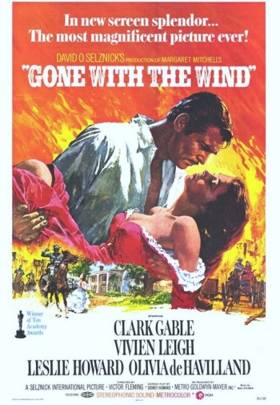

Drama (cine y televisión)
 Es un género que trata situaciones generalmente no épicas en un contexto serio,
con un tono y una orientación más susceptible de inspirar tristeza y compasión que risa o gracia.1 Sin embargo,
desde el punto de vista etimológico, el drama evoca acción y diálogo.
Filmes dramáticos con frecuencia han sido nominados al Premio Óscar
- The Artist (2011)
- El discurso del rey (2010)
- The Hurt Locker (2009)
- Slumdog Millionaire (2008)
- The Departed (2006)
Subgéneros dramáticos
Como ya se dijo, los filmes dramáticos abarcan un gran espectro de diversas y
diferentes características, por lo que películas de este tipo pueden ser categorizadas en subgéneros,
según la enumeración que se indica a continuación :
- Drama policíaco
- Dramas vinculados a personajes y temáticas relacionados con el crimen, el sistema legal
- el sistema policíaco, como por ejemplo las películas Primal Fear (1996), El informe Pelícano (1993),
The Accused (1988), Sacco y Vanzetti (1971), Testigo de cargo (1957).
- Drama histórico e histórico-épico
- Incluyendo Drama de guerra
- Películas que abordan momentos o eventos dramáticos de la historia.
- Docudrama
- La diferencia entre un docudrama y un documental, es que en este último caso se filma a
gente real que relata
- se filma a actores profesionales o aficionados, quienes recrean las historias sobre la base de un guion o en base
improvisada. Este género no debe ser confundido con la llamada docuficción
- Drama de improvisación
- Representación actuada improvisada
- Ligada o inspirada en el psicodrama
- Comedia dramática
- Obra que incluye drama, y en la que el balance entre humor
- abordaje serio y realista está equilibrado o relativamente equilibrado